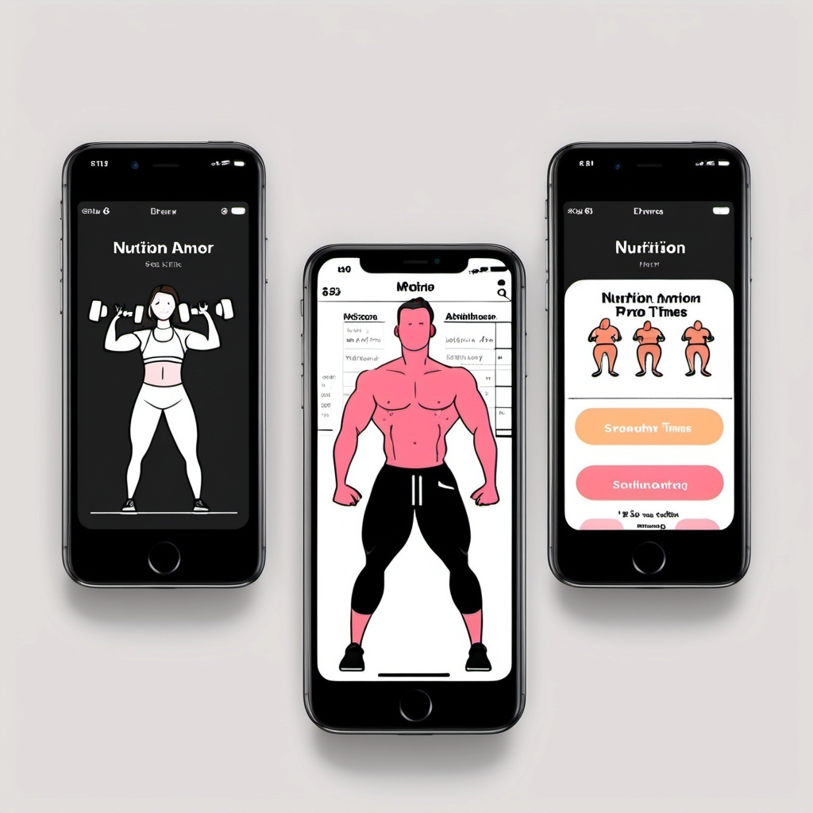

Problem Statement: Athelete Program and Program Tracking
Lifting athletes need a way to track their workouts and associated intensities, helping them monitor progress, enhance motivation, and optimize their fitness routines.

Affinity Diagram: Athlete and Program Nutrition
We worked to list the opitions and attributes to work towards solving the problem fo monitoring and workout and nutrition progress for atheletes
Sketch
Vizualizaiton of a mobile app that can track Athlete's nutrtition and workout programs